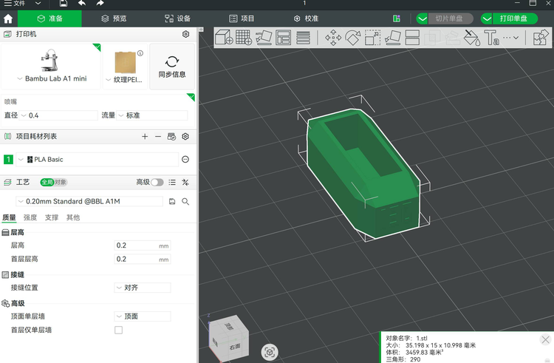
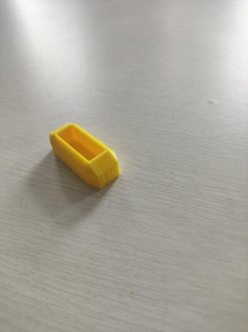
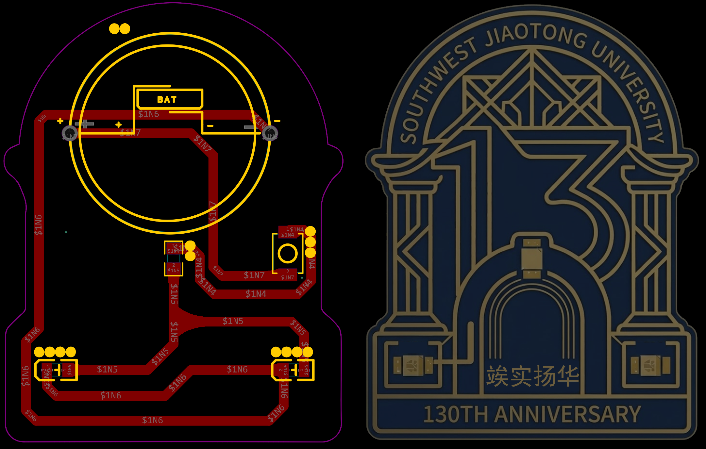
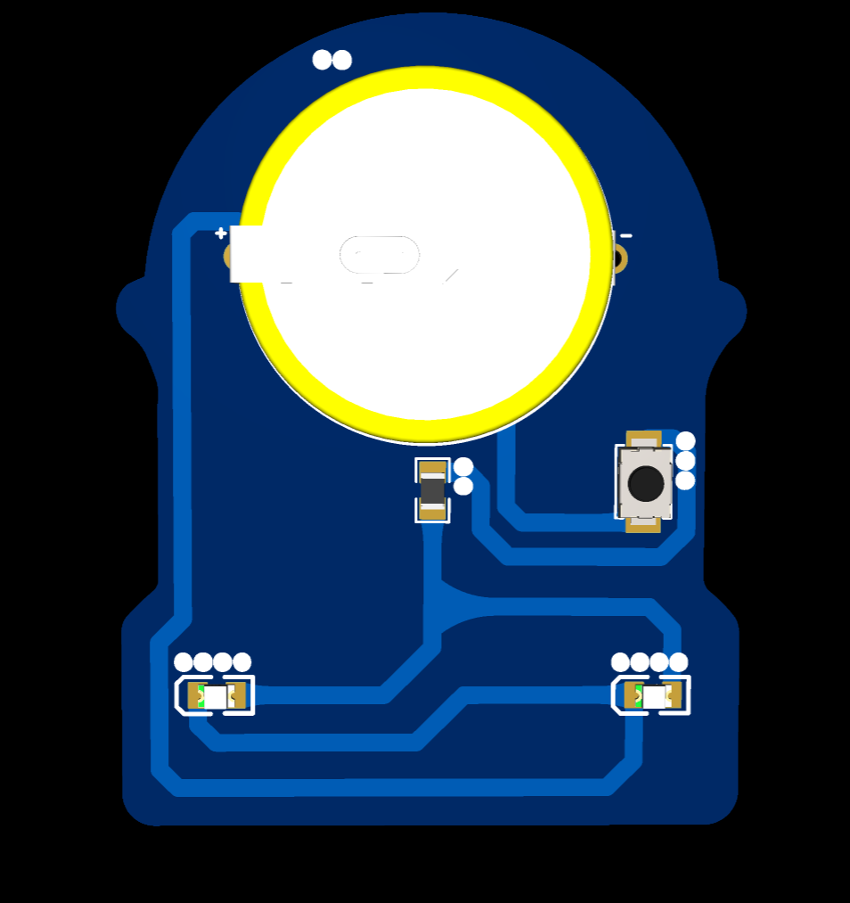
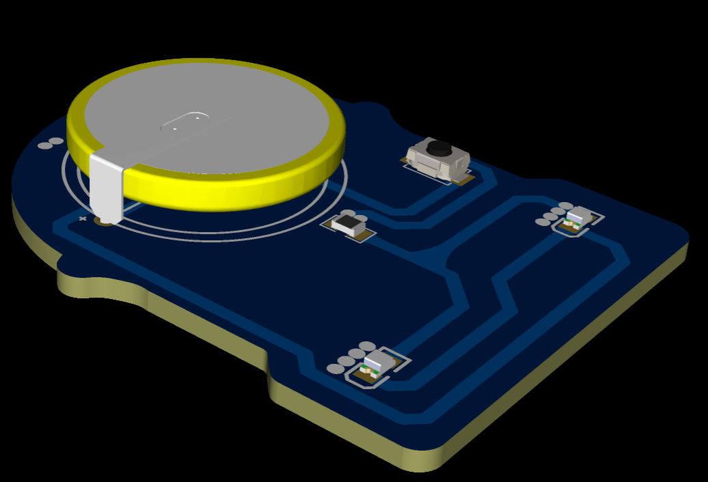
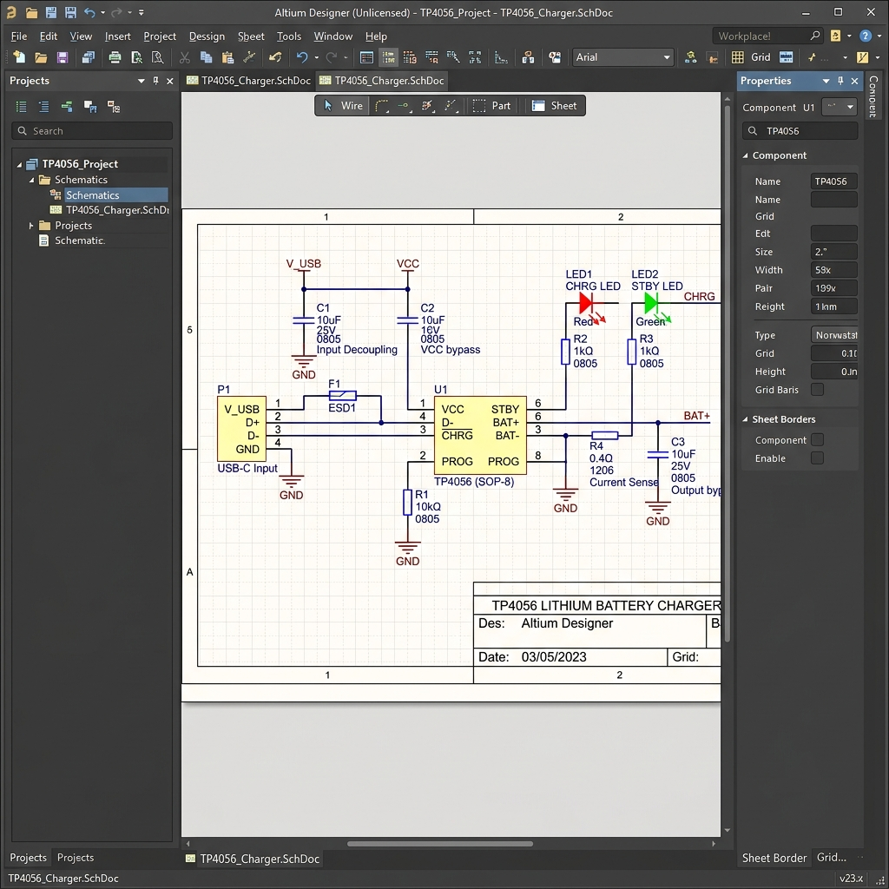
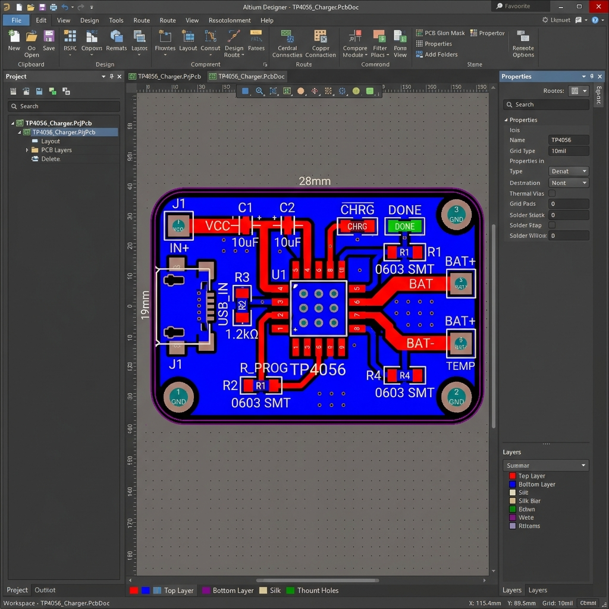
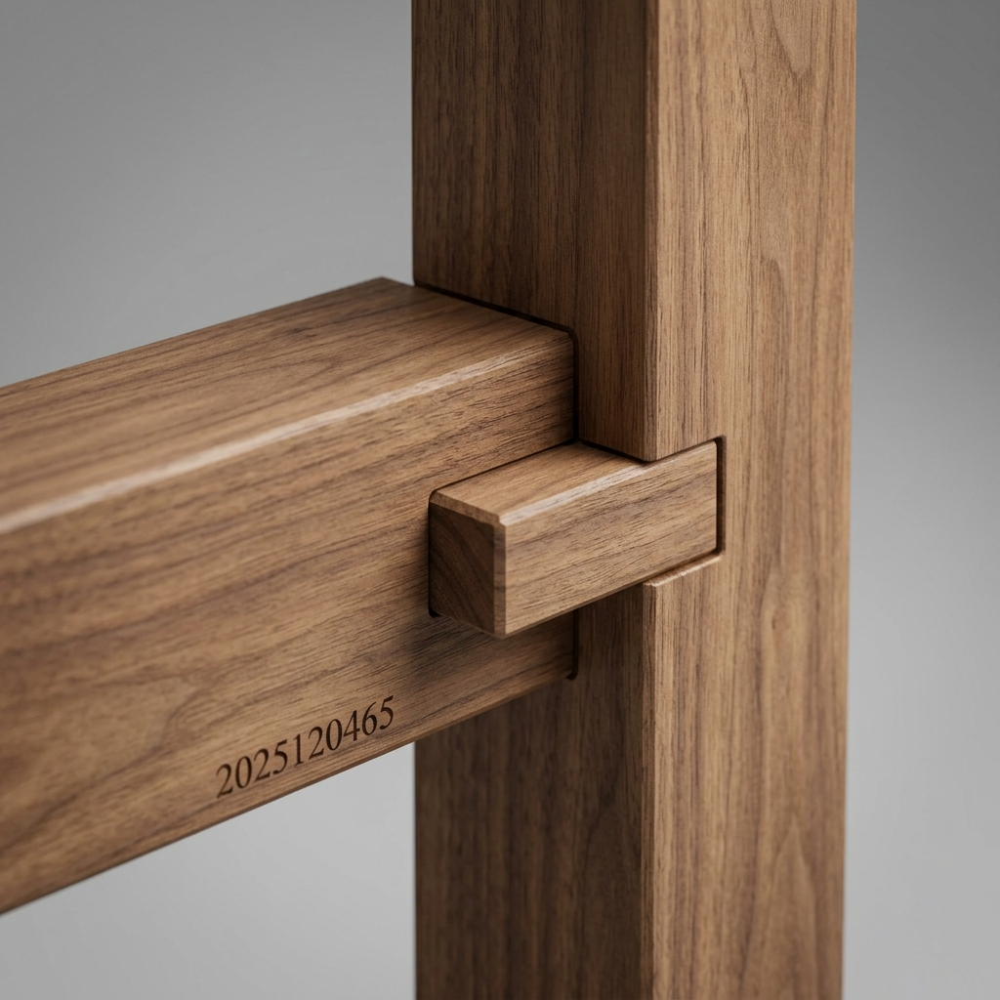
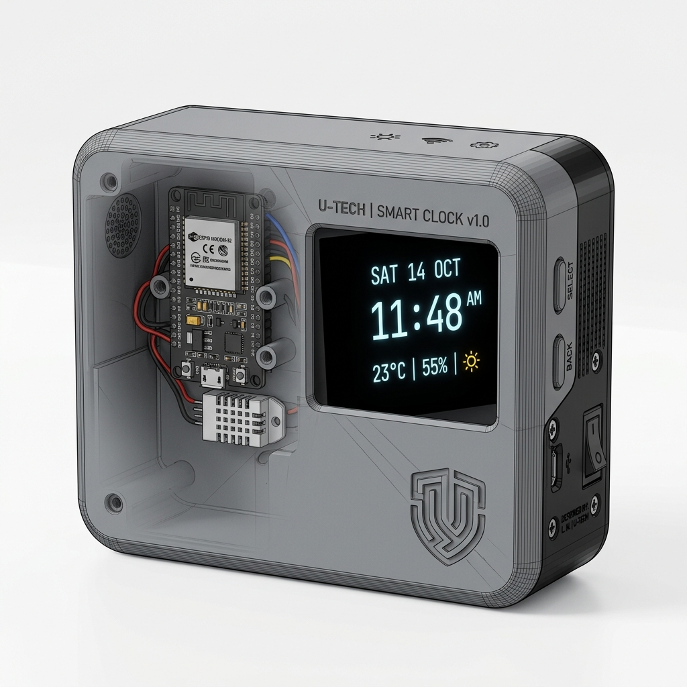

探索计算与物理世界的交汇点 | 创客项目全记录
作者：郑洗尘 (2025120465) | 西南交通大学计算机科学技术
所有源码与资料已开源托管，点击对应模块即可查看 GitHub/Gitee 仓库源码
你好！我是郑洗尘，西南交通大学计算机科学技术专业（第二学位）本科生，学号 2025120465。
我对软硬件结合、机器人控制以及创客文化有着浓厚的兴趣。在本学期的《从代码到实物》课程期间，我不仅在校内完成了前期的基础训练（包括 3D 打印与 PCB 设计的基础概念），还有幸前往校外科技企业进行了一段深度的机器人研发实习。这本 HTML Weblog 记录了我在课程与实习期间，关于跨越“数字代码”与“物理实物”鸿沟的探索与实践。
为传承交大精神，展现校园文化，本项目以 3D 设计和 3D 打印技术为载体，创作了具有交大130周年校庆特色的文创作品（单件尺寸不超过 200mm×200mm×200mm，充分考虑了 3D 打印工艺可行性）。


结合课堂发放的元器件，利用 ESP32 的 WiFi 模块 与 PWM (模拟输出) 控制舵机 两个基础功能，实现了一个通过网页局域网控制的智能舵机。
注意： 受限于外出实习，本模块仅完成 C++ 底层软件系统的架构设计与源码开发，未能在实验室进行硬件组装测试。
ESP32 建立轻量级 Web 服务器，解析 HTTP GET 请求并通过 ESP32Servo 库输出 PWM 驱动信号。
#include <WiFi.h>
#include <WebServer.h>
#include <ESP32Servo.h>
const char* ssid = "YOUR_WIFI_SSID";
const char* password = "YOUR_WIFI_PASSWORD";
WebServer server(80);
Servo myServo;
const int servoPin = 13;
void setup() {
Serial.begin(115200);
myServo.attach(servoPin);
WiFi.begin(ssid, password);
while (WiFi.status() != WL_CONNECTED) {
delay(500);
Serial.print(".");
}
Serial.println("\nWiFi connected.");
Serial.print("IP Address: ");
Serial.println(WiFi.localIP());
server.on("/", []() {
String html = "<html><body><h1>ESP32 Servo Control</h1>";
html += "<a href=\"/set?angle=0\"><button>0 Deg</button></a> ";
html += "<a href=\"/set?angle=90\"><button>90 Deg</button></a> ";
html += "<a href=\"/set?angle=180\"><button>180 Deg</button></a>";
html += "</body></html>";
server.send(200, "text/html", html);
});
server.on("/set", []() {
if (server.hasArg("angle")) {
int angle = server.arg("angle").toInt();
myServo.write(angle);
}
server.sendHeader("Location", "/");
server.send(303);
});
server.begin();
}
void loop() {
server.handleClient();
}
包含西南交通大学130周年校庆元素，包含电子元件，标注了精确尺寸，布线满足线条宽度 1mm、拐弯 45° 的工艺要求。



基于带有散热片的 TP4056 (C16581)，进行了详尽的数据手册分析与 Altium Designer 电路复刻。完成了全板铺地 (GND网络)、边框圆角矩形设计及 DRC 检查。
注意： 仅包含 EDA 设计与参数计算，未打样落地。


| 管脚 | 名称 | 功能描述 |
|---|---|---|
| 1 | TEMP | 电池温度检测输入端。若接低电平或高电平则暂停充电。 |
| 2 | PROG | 恒流充电电流设置端。通过外接电阻至地设定充电电流。 |
| 3 | GND | 电源地。全板铺铜连接网络。 |
| 4 | VCC | 正输入供电电压。 |
| 5 | BAT | 电池连接端。 |
| 6 | STDBY | 电池充电完成指示端。 |
| 7 | CHRG | 充电状态指示端。 |
| 8 | CE | 芯片使能输入端。高电平使能。 |
设计了一款结合中国传统智慧的榫卯（Mortise and Tenon）拼插装置。模型结构严谨，凸凹咬合精密，并在侧面雕刻了个人学号与姓名信息。

团队介绍： 郑洗尘（独立完成。因在外实习未能组队，故单人承担全栈设计任务）
项目边界： 融合了 3D 打印外壳设计、OLED 显示驱动、以及 ESP32 嵌入式计算。
注意： 受限于实习时间冲突，本项目未能在实验室完成 3D 打印与焊接组装，仅提交了**软件系统源码**与**产品结构概念图**。

#include <WiFi.h>
#include <Wire.h>
#include <U8g2lib.h>
#include "time.h"
const char* ssid = "YOUR_WIFI_SSID";
const char* password = "YOUR_WIFI_PASSWORD";
const char* ntpServer = "pool.ntp.org";
U8G2_SSD1306_128X64_NONAME_F_HW_I2C u8g2(U8G2_R0, U8X8_PIN_NONE);
void setup() {
u8g2.begin();
WiFi.begin(ssid, password);
while (WiFi.status() != WL_CONNECTED) delay(500);
configTime(8 * 3600, 0, ntpServer);
}
void loop() {
struct tm timeinfo;
if(getLocalTime(&timeinfo)){
char timeStr[20];
strftime(timeStr, sizeof(timeStr), "%H:%M:%S", &timeinfo);
u8g2.clearBuffer();
u8g2.setFont(u8g2_font_ncenB14_tr);
u8g2.drawStr(20, 35, timeStr);
u8g2.sendBuffer();
}
delay(1000);
}
团队介绍： 郑洗尘（独立完成。本方案由我在实习单位的真实研发场景中沉淀与抽象而来，导师指导，个人主导开发）
项目摘要： 结合在校外企业实习期间的技术积累，本团队设计了一个“成功率优先、工程可落地”的机械臂灵巧手抓取架构。摒弃纯强化学习的黑盒，采用**视觉候选生成 + 手型 Synergy 适配 + 电流力控兜底**的混合架构。
基于 ROS 的流水线架构，保证了从感知到控制的高效流转与错误恢复：
graph TD;
A[RGB-D 相机输入] --> B[点云处理与桌面分割]
B --> C[6D Grasp Detector 模型预测候选]
C --> D{运动学与碰撞硬过滤}
D -- 剔除 --> E[丢弃无效位姿]
D -- 通过 --> F[多维度保守打分策略]
F --> G[最优位姿映射到手型 Synergy]
G --> H[UR5 运动与手部电流力控闭合]
H --> I{抓取成功?}
I -- 失败滑动 --> J[切换降维策略并重试 (最多3次)]
J --> C
I -- 成功 --> K[抓取完成]
完整的抓取生命周期与 3 次容错重试机制的实现：
import time
import numpy as np
from perception import CameraNode, PointCloudProcessor
from grasping import AnyGraspDetector, GraspScorer
from robot_control import UR5Controller, DexterousHandController
class GraspingPipeline:
def __init__(self):
self.camera = CameraNode()
self.pc_processor = PointCloudProcessor()
self.detector = AnyGraspDetector()
self.scorer = GraspScorer()
self.arm = UR5Controller()
self.hand = DexterousHandController()
def execute_grasp(self, object_id):
print(f"[Pipeline] Starting grasp for object {object_id}")
for attempt in range(1, 4):
print(f"[Attempt {attempt}] Generating grasp proposals...")
# 1. 感知与生成候选
rgbd = self.camera.capture()
obj_cloud = self.pc_processor.segment_object(self.pc_processor.filter_table(rgbd), object_id)
candidates = self.detector.detect_cands(obj_cloud)
# 2. 过滤与综合评分
valid_cands = []
for cand in candidates:
if self.scorer.check_kinematic_feasibility(self.arm, cand) and not self.scorer.check_collision(cand):
score = 0.3 * cand.model_score + self.scorer.score_center_distance(obj_cloud, cand) + \
self.scorer.score_enclosure(obj_cloud, cand) - self.scorer.score_edge_penalty(cand)
valid_cands.append((score, cand))
if not valid_cands: continue
valid_cands.sort(key=lambda x: x[0], reverse=True)
best_score, best_cand = valid_cands[0]
# 3. 映射到手型控制并执行
mode = ['envelop', 'pinch', 'scoop'][attempt-1]
primitive = self.hand.map_to_synergy(best_cand, mode=mode)
self.arm.move_to_pose(best_cand.pre_grasp_pose)
self.arm.move_linearly(best_cand.grasp_pose)
if self.hand.close_with_current_feedback(max_current=0.5):
self.arm.lift()
print("[Pipeline] Grasp succeeded!")
return True
else:
self.hand.open()
self.arm.move_to_home()
print("[Pipeline] Grasp failed. Slippage detected.")
return False
《从代码到实物：造你所想》这门课不仅仅是教授工具的使用，更重要的是传达了“从比特到原子”的创客理念。虽然因为校外实习的原因，我错过了学校里很多有趣的动手焊接与实物组装环节，但在实习岗位上，我面对了真正工业级的“代码到实物”的挑战——从写在 Python 脚本里的算法，到 UR5 机械臂和灵巧手的实际抓取动作。
主要的收获与感悟：
虽然这门课以这样一种略带遗憾（未能亲手在实验室打磨所有实物）的方式收尾，但它真正在我心中种下了软硬结合的种子。我所提交的这些代码与设计，是我在计算机科学学习道路上的一次重要跨越。